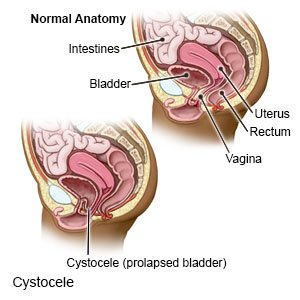

Cystocele (Fallen Bladder)

CAUSES
Causes of cystocele include:
- Vaginal births, which may involve straining the muscles of the floor of the pelvis.
- Family history.
- Obesity.
- Intense physical activity, including lifting heavy objects.
- Hysterectomy.
- Constipation and/or repeated muscle straining during bowel movements.
- Frequent coughing.
- Aging and a drop in the hormone estrogen. Estrogen helps keep muscles around the vagina strong, but women produce less estrogen as they enter menopause (the end of menstrual periods).
SYMPTOMS
Symptoms of cystocele include:
- Feeling or seeing something bulging through the vaginal opening.
- Difficulty emptying the bladder (urinating).
- Having to run to the bathroom frequently to pass water, or just a feeling as if you have to go a lot.
- Frequent urinary tract infections.
- Feeling of fullness, heaviness, or pain in the pelvic area or lower back. This feeling may get worse when the person is standing, lifting, coughing, or as the day goes on.
- The bladder bulging into or out of the vagina.
- Painful sex.
- Problems inserting tampons or applicators.
DIAGNOSIS
A Grade 2 or Grade 3 cystocele can be diagnosed from a description of symptoms and from an examination of the vagina. The doctor may also perform certain tests.
- Urodynamics: Measures the bladder’s ability to hold and release urine.
- Cystoscopy (cystourethroscopy): A long tube-like instrument is passed through the urethra to examine the bladder and urinary tract for malformations, blockages, tumors, or stones.
TREATMENTS
- Weight loss.
- Estrogen replacement therapy.
- Kegel exercises to strengthen the openings of the urethra, vagina and rectum. These exercises involve tightening the muscles that are used to stop the flow of urine, holding for 10 seconds, and then releasing.
- If symptoms are modest, a device called a pessary may be placed in the vagina to hold the bladder in place. Pessaries are available in a number of shapes and sizes to ensure a proper fit. A pessary has to be removed and cleaned on a regular basis in order to avoid infection or ulcers.